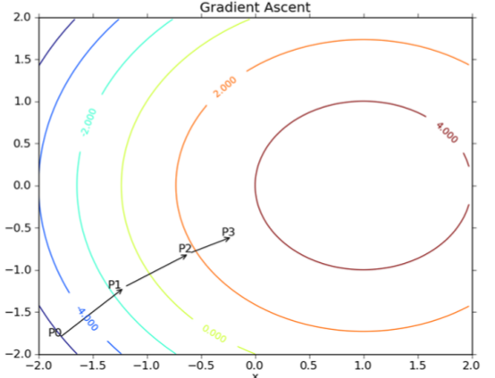
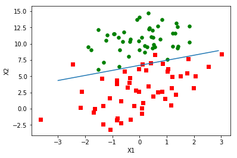
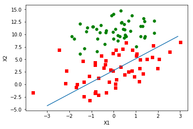
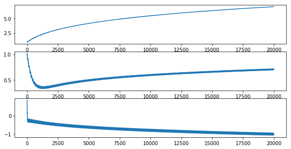
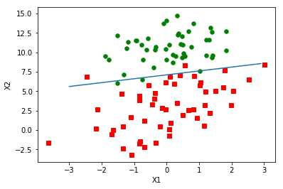
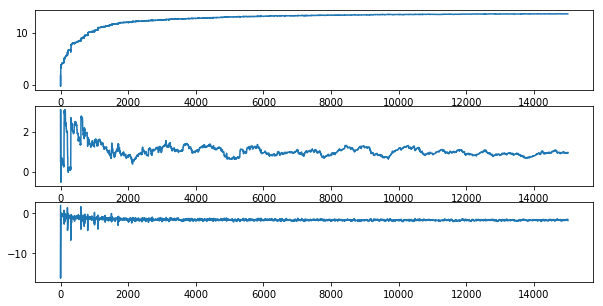

Logistic Regression
本代码来自Machine Learning in Action。
想要了解更多的朋友可以参考此书。
Sigmoid函数
$$\sigma(z) = \frac{1}{(1+e^{-z})}$$
1 | import numpy as np |

1 | z = np.linspace(-60, 60, 100) |

Sigmoid函数类似一个单位阶跃函数。当x＝0时，Sigmoid函数值为0.5；随着x增大，Sigmoid函数值将逼近于1；随着x减小，Sigmoid函数将逼近于0。利用这个性质可以对它的输入做一个二分类。
为了实现Logistic回归分类器，我们可以在每个特征上都乘以一个回归系数，然后把它的所有的结果值相加，将这个总和带入Sigmoid函数中，进而得到一个范围在0~1之间是数值。当大于0.5的时候，将数据分类为1；当小于0.5的时候，将数据分类为0。
Sigmoid函数的输入记为z:
$$z=w_0x_0 + w_1x_1 + w_2x_2 + \cdot \cdot \cdot + w_n x_n$$
Sigmoid函数的导数
Sigmoid导数具体推导过程如下：
$$
\begin{align}
f^{\prime}(z) &= (\frac{1}{1+e^{-z}})^{\prime}\\
&=\frac{e^{-z}}{(1+e^{-z})^2}\\
&=\frac{1+e^{-z}-1}{(1+e^{-z})^2}\\
&=\frac{1}{(1+e^{-z})}(1-\frac{1}{(1+e^{-z})})\\
&=f(z)(1-f(z))
\end{align}
$$
梯度上升法
梯度上升法：顾名思义就是利用梯度方向，寻找到某函数的最大值。
梯度上升算法迭代公式：
$$w:=w+\alpha \nabla_w f(w)$$
梯度下降法：和梯度上升想法，利用梯度方法，寻找某个函数的最小值。
梯度下降算法迭代公式：
$$w:=w-\alpha \nabla_w f(w)$$

梯度上升算法每次更新之后，都会重新估计移动的方法，即梯度。
Logistic 回归梯度上升优化法
加载数据
1 | def loadDataSet(): |
1 | dataArray, labelMat = loadDataSet() |
('Total: ', 100)
('The first sample: ', [1.0, -0.017612, 14.053064])
('The second sample: ', [1.0, -1.395634, 4.662541])
('Label: ', [0, 1, 0, 0, 0, 1, 0, 1, 0, 0, 1, 0, 1, 0, 1, 1, 1, 1, 1, 1, 1, 1, 0, 1, 1, 0, 0, 1, 1, 0, 1, 1, 0, 1, 1, 0, 0, 0, 0, 0, 1, 1, 0, 1, 1, 0, 1, 1, 0, 0, 0, 0, 0, 0, 1, 1, 0, 1, 0, 1, 1, 1, 0, 0, 0, 1, 1, 0, 0, 0, 0, 1, 0, 1, 0, 0, 1, 1, 1, 1, 0, 1, 0, 1, 1, 1, 1, 0, 1, 1, 1, 0, 0, 1, 1, 1, 0, 1, 0, 0])
数据集梯度上升
1 | def sigmoid(inX): |
1 | gradAscent(dataArray, labelMat) |
matrix([[ 4.12414349],
[ 0.48007329],
[-0.6168482 ]])
绘制数据和决策边界
1 | def plotBestFit(weights): |
1 | weights = gradAscent(dataArray, labelMat) |

１个epoch的随机梯度上升
梯度上升算法在每次更新系数的时候都需要便利整个数据集，如果数据集的样本比较大，该方法的复杂度和计算代价就很高。有一种改进的方法叫做随机梯度上升方法。该方法的思想是选取一个样本，计算该样本的梯度，更新系数，再选取下一个样本。
1 | def stocGradAscent0(dataMatrix, classLabels): |
1 | weights = stocGradAscent0(np.array(dataArray), labelMat) |

上图之后遍历了一次数据集，这样的模型还处于欠拟合状态。需要多次遍历数据集才能优化好模型，接下来我们会运行200次迭代。
200个epoch的随机梯度上升
1 | def stocGradAscent0(dataMatrix, classLabels): |
1 | weights, X0, X1, X2 = stocGradAscent0(np.array(dataArray), labelMat) |

可视化权重(weights)的变化
1 | fig, ax = plt.subplots(3, 1, figsize=(10, 5)) |

从上图可以看出，算法正在逐渐收敛。由于数据集并不是线性可分的，所以存在一些不能正确分类的样本点，每次更新权重引起了周期的变化。
更新过后的随机梯度上升算法
- 学习率alpha会在每次迭代之后调整。
- 采用随机选取样本的更新策略，减少周期性的波动。
1 | def stocGradAscent1(dataMatrix, classLabels, numIter=150): |
1 | weights, X0, X1, X2 = stocGradAscent1(np.array(dataArray), labelMat) |

可视化权重(weights)的变化
1 | fig, ax = plt.subplots(3, 1, figsize=(10, 5)) |

示例：从疝气病症预测病马的死亡率
1 | def classifyVector(inX, weights): |
1 | multiTest() |
/home/tianliang/anaconda2/lib/python2.7/site-packages/ipykernel_launcher.py:2: RuntimeWarning: overflow encountered in exp
the error rate of this test is: 0.328358
the error rate of this test is: 0.432836
the error rate of this test is: 0.388060
the error rate of this test is: 0.373134
the error rate of this test is: 0.373134
the error rate of this test is: 0.447761
the error rate of this test is: 0.343284
the error rate of this test is: 0.313433
the error rate of this test is: 0.328358
the error rate of this test is: 0.462687
after 10 iterations the average error rate is: 0.379104